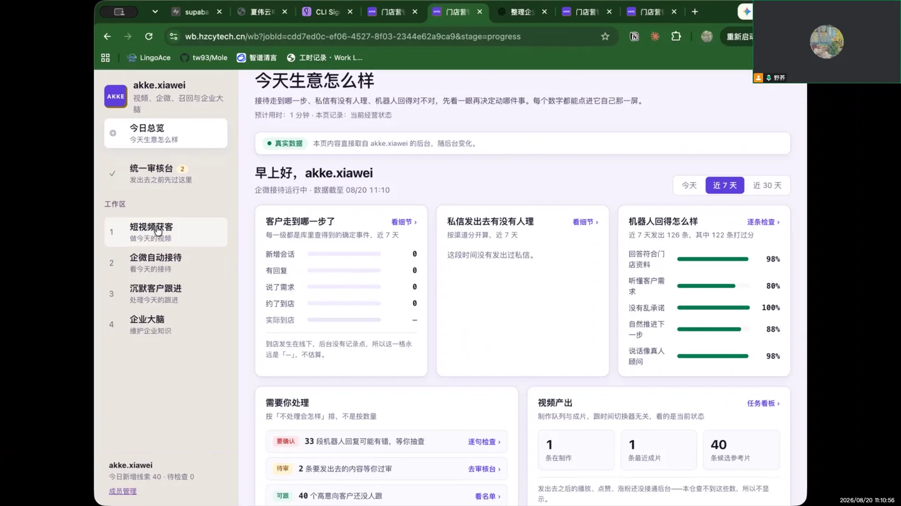
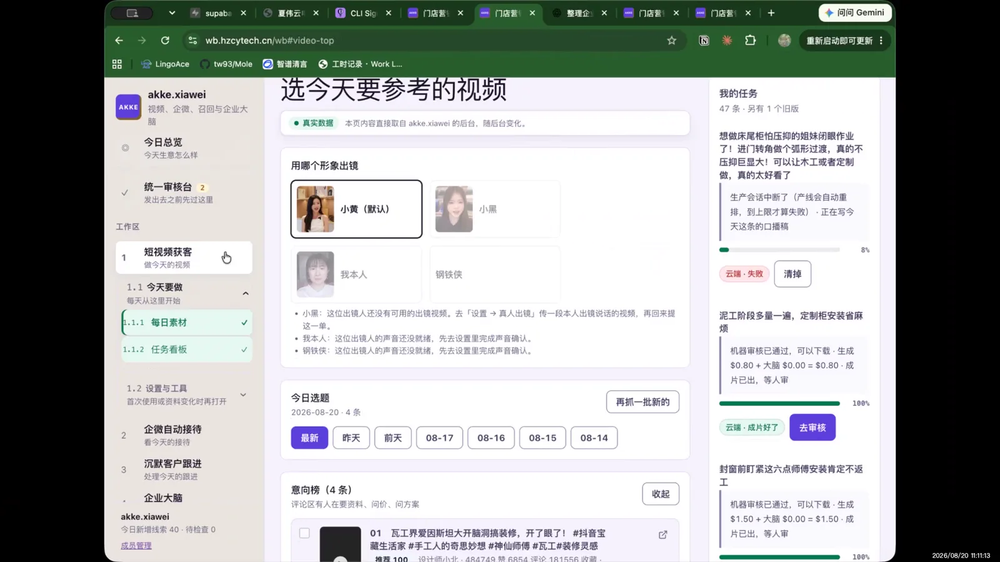
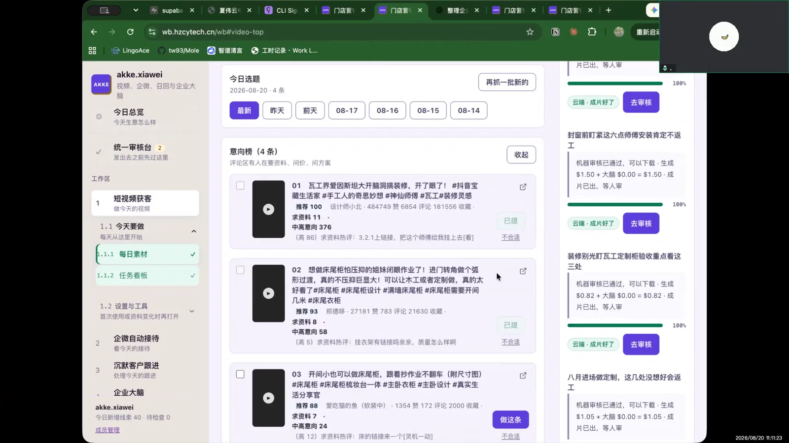
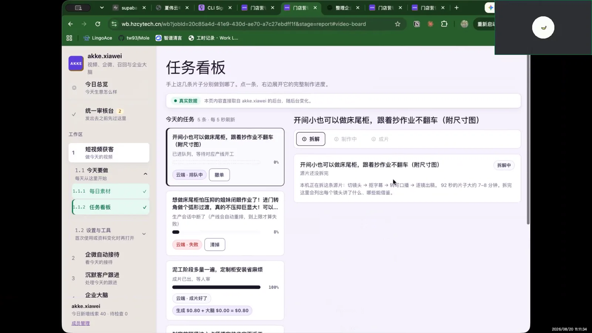
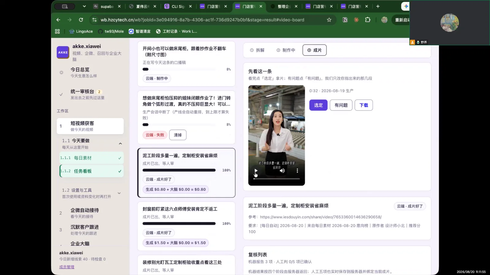
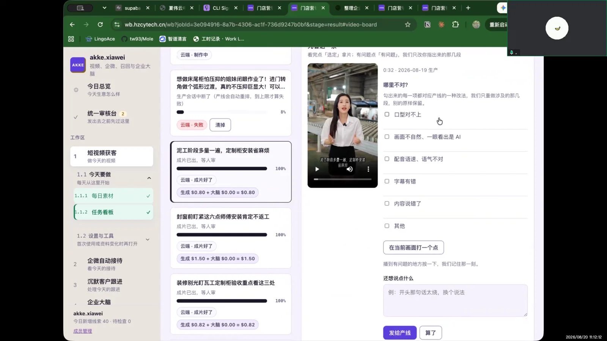

结论摘要
用户能自然完成主链路，但“有问题”的发现来自观看成片后的主观判断，系统当前没有把反馈原因结构化到足够可用的程度。
6可确认的操作节点
2明确成片问题
1返工后仍未解决
0最终满意成片
行为事实：用户先选人物形象，再从素材卡片点击“做这条”；等待制作完成后打开成片，第二次按指导点击“有问题”并提交反馈，系统再次制作，但结果仍未达到预期。
页面与操作逐步还原
标签区分用户真实动作、页面浏览和未完成结果。
00:27
实际操作进入“短视频获客”
从左侧模块导航进入短视频获客。访谈者追问拿到页面后第一步会做什么。
00:42
实际操作先选人物形象
用户明确说“我就先点了那个人物形象”。这表明出镜人选择是其心智中的起点，而非先挑选题。
00:48
实际操作向下浏览素材并点“做这条”
继续向下看素材卡片，发现卡片上的行动按钮后点击。用户没有提到复杂比较，决策更像“看到合适的就做”。
00:58
等待状态看到“正在制作中”
点击后没有继续操作，只等待系统制作完成。说明进度态至少让用户知道任务已经提交，但等待期间缺少更多可行动信息。
01:25
实际操作打开成片观看
制作完成后直接点开成片。第一轮发现问题时，她没有使用页面反馈，而是直接把问题告知工作人员。
01:32
第二次操作点击“有问题”并提交
收到引导后，第二次才通过页面反馈入口提交问题。具体反馈是：口型显假、画面与说话内容不一致、整体观看感受让人一眼觉得是假的。
“口型可能会有点假……它说的跟它的画面是不一致的……别人看了就会一眼假。”
02:13
结果未闭环再次制作，仍未达到预期
提交后系统又制作一遍，但用户评价仍未达到想要的效果。录像没有出现最终接受、发布或放弃动作。
访谈中具体问了什么
拿到“短视频获客”页面之后，接下来是怎样操作的？每个步骤是什么？
点“做这条”之后进行了什么操作？是继续操作还是等待制作？
做好之后会做什么？如何打开、查看成片？
看到成片有问题时，接下来会怎么操作？
提交了哪些具体问题？发送后系统发生了什么？
再次制作后是否达到想要的效果？
关键画面
点击任意图片后，可用左右按钮或键盘 ← → 连续切换，不需要关闭当前图片。






问题与产品建议
P0 · 结果质量
返工没有解决同类问题
反馈后的新版本仍未达预期。建议把口型、画面语义、人物动作分别做成结构化原因，并在返工任务中显式携带。
P0 · 可信度
“一眼假”直接影响发布意愿
口型和画面不自然属于发布阻断项，不能只作为普通备注。审片页应给出“阻断发布”的严重级别。
P1 · 反馈发现
用户第一次没有点“有问题”
需要工作人员提醒才使用入口，说明按钮语义或位置不够自解释。可在播放结束后主动询问“这版可以发布吗？”
保留 · 主链路
制作路径容易理解
选人、挑素材、点击制作、等待、看成片的顺序自然，用户能独立复述，主流程无需大改。
后续重点了解
整体使用感受
整个操作是否简单？哪一步不太好理解？是否愿意继续使用？
整个操作是否简单？哪一步不太好理解？是否愿意继续使用？
每日自动抓取日志
今天抓取了多少条视频？有多少条可用素材？抓取是否成功？失败后能否重新抓取？
今天抓取了多少条视频？有多少条可用素材？抓取是否成功？失败后能否重新抓取？
视频效果
人物和口型是否自然？画面与说话内容是否一致？视频看起来是否真实？是否愿意直接发布？
人物和口型是否自然？画面与说话内容是否一致？视频看起来是否真实？是否愿意直接发布？
修改效果
提交问题后是否解决？新版本还有哪些问题？是否需要继续修改？
提交问题后是否解决？新版本还有哪些问题？是否需要继续修改？